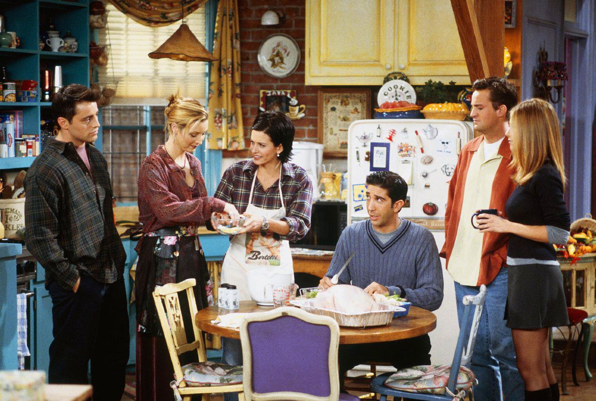
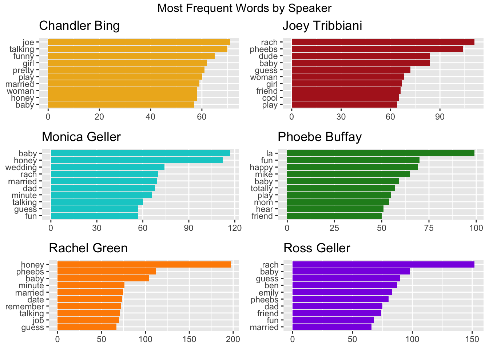
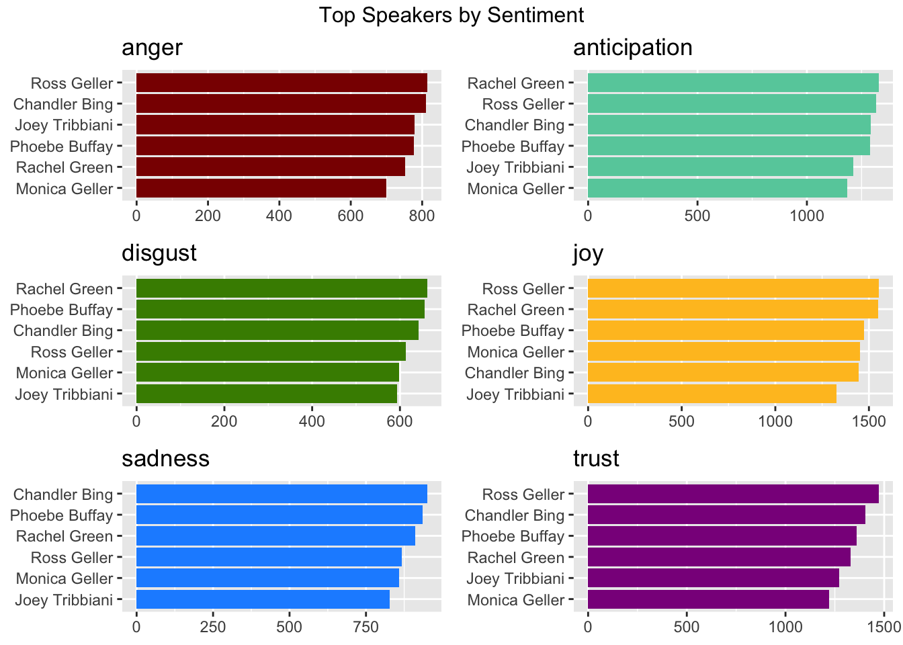
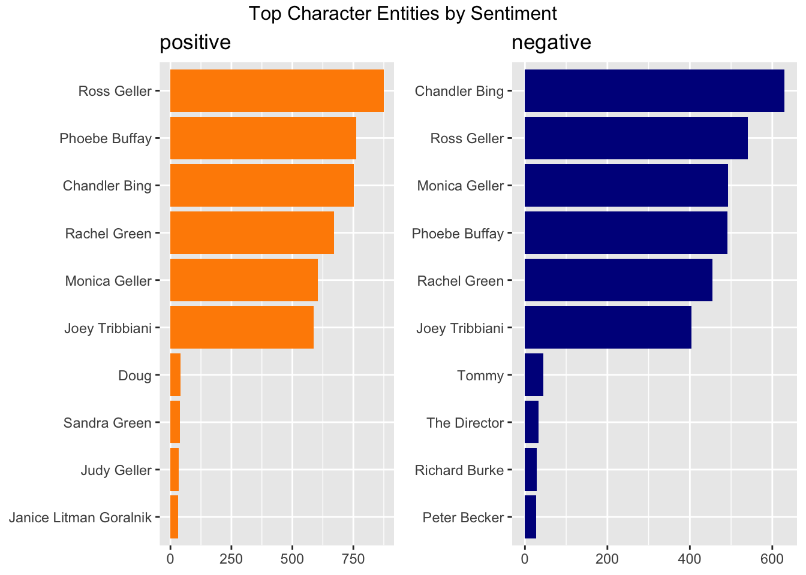
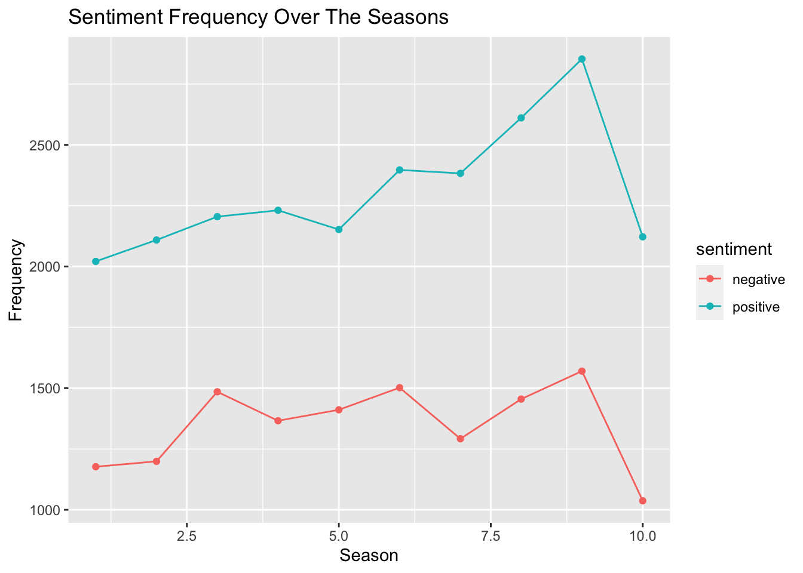

library(tidyverse)
library(tidytext)
library(textdata)
library(kableExtra)
library(gridExtra)
library(friends)The One With The R Analysis
LING 343 WN23 Project 2

1 Introduction
Attracting millions of viewers worldwide, the sitcom Friends is renowned for its witty dialogue, memorable catchphrases, and distinct character personalities, and it has left its mark on popular culture. As a fan, I was inspired to conduct an analysis of the script data to gain insights into the linguistic patterns and emotional dynamics of this iconic sitcom.
First, I wanted to extract some information about the distribution of lines throughout the show. Then, I aimed to identify the most frequently used words and phrases by the main characters of Friends. By examining word frequency, we can gain insights into the linguistic patterns and styles of each character, ranging from the sarcastic remarks of one character to the quirky idioms of another. Finally, I performed sentiment analysis to understand the emotional tones conveyed by different speakers. This also enabled me to explore how the sentiment of the show evolved throughout the seasons and how it varied among characters.
This analysis is based on the CRAN package friends, a comprehensive package with multiple datasets that include a complete script transcript of all ten seasons of Friends and additional information.
2 Setup
3 Datasets
For this analysis, I will be using two different datasets from the friends package.
friends contains all utterances in the show, with information regarding speaker, season, episode, and scene.
friends_entities includes additional annotation on character entities for each utterance, that is, character(s) being referred to in that specific line.
4 Number of Lines
Before diving into the lines themselves for a word-by-word analysis, I was curious to answer a few questions about the distribution of lines throughout the show. For instance, I wanted to see which characters had the most lines overall, as well as which seasons. This provided me with a little more context for my future findings.
Here, I counted the lines for each speaker calculated the percentage based on total lines for all speakers, excluding scene directions or situations where all the characters talk in unison.
lines_freq <- friends |>
filter(!speaker %in% c("Scene Directions", "#ALL#")) |>
drop_na()total_lines <- nrow(lines_freq)The table below shows the top 15 characters with the most lines across all seasons, arranged in a descending order.
lines_freq |>
group_by(speaker) |>
count() |>
arrange(desc(n)) |>
mutate("%" = (n / total_lines) * 100) |>
head(15) |>
kbl(caption = "Top 15 Speakers by Number of Lines") |>
kable_minimal()| speaker | n | % |
|---|---|---|
| Rachel Green | 9312 | 15.3443077 |
| Ross Geller | 9157 | 15.0888988 |
| Chandler Bing | 8465 | 13.9486216 |
| Monica Geller | 8441 | 13.9090744 |
| Joey Tribbiani | 8171 | 13.4641686 |
| Phoebe Buffay | 7501 | 12.3601430 |
| Mike Hannigan | 330 | 0.5437738 |
| Richard Burke | 281 | 0.4630316 |
| Janice Litman Goralnik | 216 | 0.3559247 |
| Carol Willick | 193 | 0.3180253 |
| Charlie Wheeler | 189 | 0.3114341 |
| Judy Geller | 180 | 0.2966039 |
| Frank Buffay Jr. | 179 | 0.2949561 |
| Emily Waltham | 174 | 0.2867171 |
| Jack Geller | 150 | 0.2471699 |
Rachel and Ross take the lead with about 15% of total lines each, followed by Chandler, Monica, and Joey, with ~13%, then Phoebe, with ~12%. Surprisingly, the supporting character with the most lines throughout the show is Phoebe’s love interest Mike Hannigan, despite onlybeing introduced in the second-to-last season!
Similarly, I performed this analysis for seasons instead of speakers. This next table shows the percentage of lines for each season, arranged in a descending order.
lines_freq |>
group_by(season) |>
count() |>
arrange(desc(n)) |>
mutate("%" = (n / total_lines) * 100) |>
kbl(caption = "Ranking of Seasons by Number of Lines") |>
kable_minimal()| season | n | % |
|---|---|---|
| 6 | 6412 | 10.565689 |
| 3 | 6397 | 10.540973 |
| 9 | 6284 | 10.354771 |
| 7 | 6272 | 10.334998 |
| 4 | 6245 | 10.290507 |
| 8 | 6206 | 10.226243 |
| 5 | 6154 | 10.140557 |
| 1 | 5835 | 9.614909 |
| 2 | 5671 | 9.344670 |
| 10 | 5211 | 8.586683 |
The two seasons with the most lines are seasons 6 and 3, which makes perfect sense, since these are the two seasons with the most episodes (25 in total), as opposed to the 24-episode run of almost all remaining seasons. The only exception to this rule is season 10, which aired for only 18 episodes, and consequently earned the last spot in our table.
5 Word Frequency
For this next section, I filtered the dataset to contain only data for our 6 main characters: Chandler Bing, Joey Tribbiani, Monica Geller, Phoebe Buffay, Rachel Green, and Ross Geller. I wanted to explore specifically their lines and see their most frequently used words and phrases.
main <- friends |>
filter(speaker %in% c("Chandler Bing", "Joey Tribbiani", "Monica Geller", "Phoebe Buffay", "Rachel Green", "Ross Geller"))Since we are looking at speech, I removed “stop words,” as well as some filler words, and words that won’t necessarily provide any relevant insight from the dataset.
custom_stop <- tibble(word = c("hey", "yeah", "uh", "gonna", "guys", "y'know", "ooh", "wait", "umm", "um", "huh", "ah", "wow", "ohh", "ya", "whoa", "gotta", "wanna", "uhh", "lol", "ow", "dum", "ho", "ha", "ew", "blah", "time", "guy", "god", "woo", "ree", "wh", "woah", "kinda", "chandler", "joey", "monica", "phoebe", "rachel", "ross"))main_words <- main |>
unnest_tokens("word", "text") |>
anti_join(stop_words, by = join_by(word)) |>
anti_join(custom_stop, by = join_by(word))In order to present the information in a clear manner, I created a function to generate individual word frequency plots for each of the main characters. I also removed some additional words that are significantly common among characters.
common_words <- tibble(word = c("love", "alright", "fine", "stuff", "listen", "feel", "call", "talk", "stop", "people", "nice", "day", "night", "lot", "bad", "bye", "told", "happened"))generate_wf <- function(speaker_in, fill_in)
main_words |>
filter(speaker == speaker_in) |>
anti_join(common_words, by = join_by(word)) |>
count(word, sort = TRUE) |>
head(10) |>
ggplot(aes(x = n,
y = reorder(word, n))) +
geom_col(show.legend = FALSE, fill = fill_in) +
labs(x = NULL,
y = NULL,
title = speaker_in)chandler <- generate_wf("Chandler Bing", "goldenrod2")
joey <- generate_wf("Joey Tribbiani", "firebrick")
monica <- generate_wf("Monica Geller", "cyan3")
phoebe <- generate_wf("Phoebe Buffay", "forestgreen")
rachel <- generate_wf("Rachel Green", "darkorange")
ross <- generate_wf("Ross Geller", "blueviolet")grid.arrange(chandler, joey, monica, phoebe, rachel, ross, nrow = 3, top = "Most Frequent Words by Speaker")
Overall, frequent words tend to include nicknames such as “Pheebs” and “Rach,” as well as endearment terms like “honey” or “baby.”
6 Trigrams
My single word analysis did not provide that much information, since the most frequent words are pretty generic and common among the characters. Therefore, I decided to also take a deeper look at trigrams, to see if I can uncover some catchphrases or recognizable patterns.
trigrams <- main |>
unnest_tokens("trigram", "text", token = "ngrams", n = 3) |>
drop_na(trigram) |>
separate(col = trigram,
into = c("word1", "word2", "word3"),
sep = " ",
remove = FALSE) |>
filter(!word1 %in% stop_words$word & !word2 %in% stop_words$word & !word3 %in% stop_words$word &
!word1 %in% custom_stop$word & !word2 %in% custom_stop$word & !word3 %in% custom_stop$word)trigrams |>
group_by(speaker) |>
count(trigram, sort = TRUE) |>
head(10) |>
kbl(caption = "Top 10 Trigrams") |>
kable_minimal()| speaker | trigram | n |
|---|---|---|
| Phoebe Buffay | la la la | 69 |
| Monica Geller | 7 7 7 | 28 |
| Joey Tribbiani | dr drake remoray | 14 |
| Ross Geller | la la la | 8 |
| Joey Tribbiani | identical hand twin | 5 |
| Monica Geller | 1 2 3 | 5 |
| Phoebe Buffay | smelly cat smelly | 5 |
| Chandler Bing | kathy kathy kathy | 4 |
| Chandler Bing | mon mon mon | 4 |
| Joey Tribbiani | hmm noodle soup | 4 |
Some interesting things can be said about this table. If you are a fan of the show, you most likely recognize some of these expressions! For example, we can imagine Phoebe singing her many “la la la” choruses or her hit song “Smelly Cat,” Monica talking about a woman’s 7 erogenous zones, and Joey meeting his identical hand twin in Vegas or playing Dr. Drake Remoray in the fictional “Days of Our Lives.”
7 Sentiment Analysis
Next, I was interested in exploring the different sentiments conveyed by the main characters. To achieve this, I joined our dataset to the NRC dictionary of sentiments.
main_sentiment <- main_words |>
left_join(get_sentiments("nrc"), by = join_by(word)) |>
filter(!sentiment %in% c("positive", "negative")) |>
drop_na()Then, I did something similar to the section on word frequencies, and created a function to generate a plot for each sentiment.
generate_sent <- function(sentiment_in, fill_in)
main_sentiment |>
filter(sentiment == sentiment_in) |>
count(speaker, sort = TRUE) |>
ggplot(aes(x = n,
y = reorder(speaker, n))) +
geom_col(show.legend = FALSE, fill = fill_in) +
labs(x = NULL,
y = NULL,
title = sentiment_in)anger <- generate_sent("anger", "darkred")
anticipation <- generate_sent("anticipation", "aquamarine3")
disgust <- generate_sent("disgust", "chartreuse4")
joy <- generate_sent("joy", "goldenrod1")
sadness <- generate_sent("sadness", "dodgerblue")
trust <- generate_sent("trust", "darkmagenta")grid.arrange(anger, anticipation, disgust, joy, sadness, trust, nrow = 3, top = "Top Speakers by Sentiment")
The plots reveal that Ross most frequently expresses anger, joy, and trust, while Chandler is the saddest. An important remark here is that the characters have a different number of total lines, which means that the plot might be slightly skewed. Even so, we can note that Rachel takes the second-to-last spot in the Anger plot despite having the most lines throughout the show!
8 Character Entities
Moreover, the friends package also includes information about character entities for each utterance, or which character(s) is being referred to in a specific line. Some of the utterances refer to multiple characters, represented by a list of names, so I used unnest() to get all of those names in separate lines. Then, I joined it to the original friends dataset to include the actual unnested line, with stop words excluded.
entity_words <- friends_entities |>
unnest(entities) |>
left_join(friends, by = c("season" = "season",
"episode" = "episode",
"scene" = "scene",
"utterance" = "utterance")) |>
unnest_tokens("word", "text", drop = FALSE) |>
anti_join(stop_words, by = join_by(word)) |>
anti_join(custom_stop, by = join_by(word))For this part, I will be looking at the positive and negative sentiments only.
entity_sentiment <- entity_words |>
left_join(get_sentiments("nrc"), by = join_by(word)) |>
filter(sentiment %in% c("positive", "negative")) |>
drop_na() Once again, I wrote a fucntion to generate a plot for each of the two sentiments.
generate_entity_sent <- function(sentiment_in, fill_in)
entity_sentiment |>
filter(sentiment == sentiment_in) |>
count(speaker, sort = TRUE) |>
head(10) |>
ggplot(aes(x = n,
y = reorder(speaker, n))) +
geom_col(show.legend = FALSE, fill = fill_in) +
labs(x = NULL,
y = NULL,
title = sentiment_in)positive <- generate_entity_sent("positive", "darkorange")
negative <- generate_entity_sent("negative", "darkblue")grid.arrange(positive, negative, nrow = 1, top = "Top Character Entities by Sentiment")
Here, it seems like Ross is most frequently associated with positive words, while Chandler is most frequently associated with negative words.
9 Through The Seasons
Now that we gained some insight on positive and negative sentiments for different speakers, I was curious to see if the general sentiment changed throughout the seasons of the show.
full_sentiment <- friends |>
filter(!speaker %in% c("Scene Directions", "#ALL#")) |>
unnest_tokens("word", "text", drop = FALSE) |>
left_join(get_sentiments("nrc"), by = join_by(word)) |>
filter(sentiment %in% c("positive", "negative")) |>
drop_na()full_sentiment |>
group_by(season) |>
count(sentiment) |>
ggplot(aes(x = season,
y = n,
group = sentiment)) +
geom_line(aes(color = sentiment)) +
geom_point(aes(color = sentiment)) +
labs(x = "Season",
y = "Frequency",
title = "Sentiment Frequency Over The Seasons")
Overall, I did not observe any surprising sentiment trends across seasons. It seems like positive sentiments are significantly more frequent on all instances, which is expected when analyzing a sitcom. In addition, the lines follow the distribution of lines per season seen earlier, with slight peaks for seasons 6, 3, and 9, the three seasons with the greatest total number of lines.